1 空间的平行直线
在平面几何里我们知道平行关系具有传递性, 即在同一平面上，如果两条直线都和第三条直线平行，那么这两条直线也互相平行. 对于空间的直线, 这种传递性是否还存在?
仔细观察下面的两种实际情景:当打开一本书时，每一页的外边界看上去都是相互平行的 (图 10-2-1); 而围栏的每一根竖条, 从不同的角度看, 也都是相互平行的(图 10-2-2).
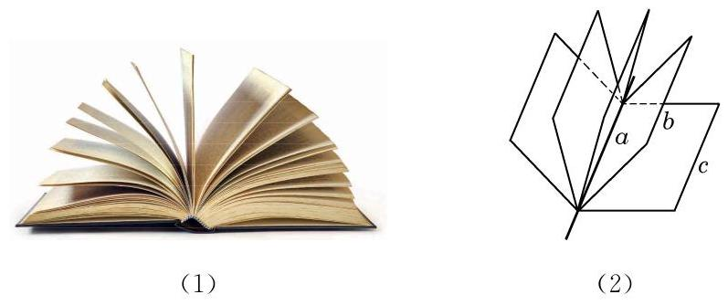
图 10-2-1
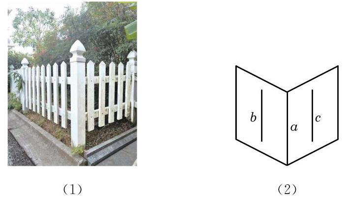
图 10-2-2
正是基于这种经验, 我们有下面的公理.
公理 4 平行于同一条直线的两条直线互相平行.
这条公理用符号语言可以表述为: 若 ,且 ,则 .
公理 4 表明, 直线的平行关系在空间同样具有传递性.
有了公理 4 ，我们就可以解释前面的两种实际情景. 例如， 在图 10-2-1 的情景中, 因为书的每一页都是矩形, 所以每一页的外边界所在的直线都平行于书脊所在的直线, 从而由平行关系的传递性知, 每一页的外边界所在的直线都是相互平行的.
围栏的情景请同学们自己依据公理 4 给出合理的解释.
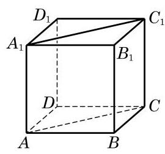
图 10-2-3
例题 1
例 1 如图 10-2-3,在正方体 中,
(1)找出与 平行的所有棱,并解释你的结论;
(2)求证: ；
(3)求证: .
答案与解析收起 / 展开
解 (1) 与 平行的棱有 和 . 因为正方体的每个面都是正方形,所以 , ，从而由公理 4，知 .
(2)证明:因为 是一个正方体，所以 . 由公理 4,可得 . 此外,显然有 ,从而 是一个平行四边形,所以 .
(3)证明:因为正方体的每个面都是正方形，所以 和 都是等腰直角三角形,从而 .
例 1 中 与 的位置关系比较特殊,它们的两边分别平行且方向相同. 空间中具有这种位置关系的两个角是否一定相等呢? 我们可以证明以下定理.
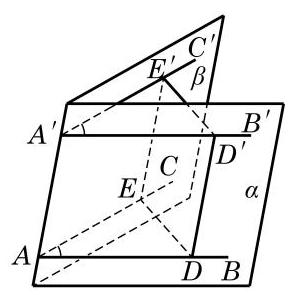
图 10-2-4
等角定理 如果一个角的两边和另一个角的两边分别平行并且方向相同, 那么这两个角相等.
如图 10-2-4,已知 与 的边 , ,并且方向相同.
求证: .
证明 因为 ，由公理 2 推论 3 可知， 确定一个平面,记为 也确定一个平面, 记为 . 在直线 上分别取点 ,在直线 、 上分别取点 ,使得 . 因为在平面 上， ，所以 是一个平行四边形,从而 ,且 . 同理, , 且 . 这样就有 ,且 ,即 是一个平行四边形. 于是, ,从而 ,即得 .
这里我们用到了不同平面上两个全等三角形的判定与性质. 之所以可以推广这种性质到空间的情形， 是因为三角形的全等与相似都具有运动的不变性.
由上述定理, 我们容易得出下面两个推论.
推论 1 如果一个角的两边和另一个角的两边分别平行, 那么这两个角相等或者互补.
推论 2 如果两条相交直线和另两条相交直线分别平行, 那么这两组直线所成的锐角(或直角)相等.
例题 2
例 2 如图 10-2-5, 是一张三角形的纸片, 是边 上的一点. 我们将此三角形纸片沿 折成一个空间四边形 . 在这个空间四边形 中, 分别为边 的中点.
求证: 是平行四边形.
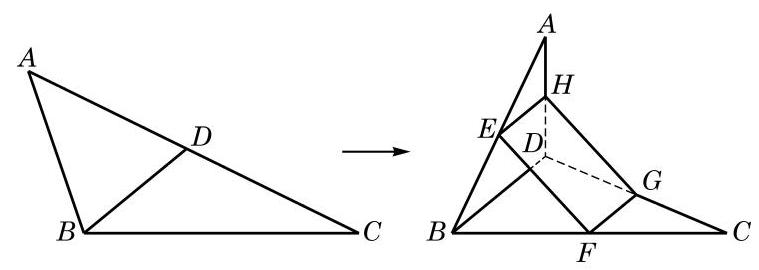
图 10-2-5
(1)将空间四边形 ABCD 还原到原来的位置, 那么所得到的四边形 EFGH 还是平行四边形吗?
(2)若 、 、 、 不是所在边的中点, 是否仍可能是平行四边形?
答案与解析收起 / 展开
证明 因为 是 的一条中位线,所以 , 且 . 同理, 是 的一条中位线,有 ,且 . 由公理 4,知 ,且 ,从而 是平行四边形.
练习 10.2(1)
练习10.2(1) · 1
- 如图,在长方体 中,直线 与 相交吗? 为什么?
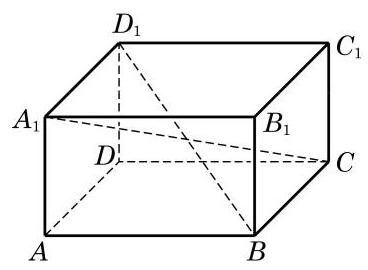
(第 1 题)
答案与解析收起 / 展开
- 相交. 在长方体 中, ,且 ,所以 ,故四边形 为平行四边形. 又 与 为其对角线,所以 与 相交于一点.
练习10.2(1) · 2
- 在如图所示的长方体 中,平面 上有一条直线 ,而平面 上有一点 . 试过点 作一条直线 , 使得 .
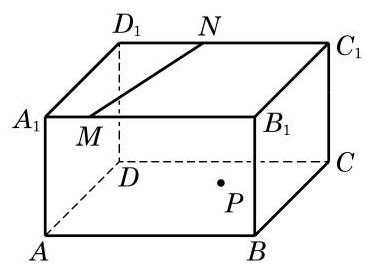
(第 2 题)
答案与解析收起 / 展开
- 解法 1: 如图 10-R4,过 作 ,垂足为 ,过 作 ,垂足为 ,由 . 又 ,所以 , 故 为平行四边形,从而 . 故只需在平面 上过 作 的平行线.
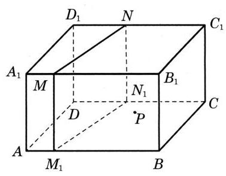
图
解法 2: 如图 10-R4,分别在 上取点 、 ,使得 ,则 且 ,故四边形 为平行四边形,即 ,过 作 ,所以 .
练习10.2(1) · 3
- 如图，在两个相交平面 、 的交线上任意取两点 与 . 在平面 上,过 与 分别作射线 与 垂直于 ; 在平面 上,过 与 分别作射线 与 垂直于 . 求证: .
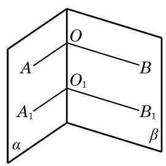
(第 3 题)
答案与解析收起 / 展开
2 异面直线
我们知道, 在同一平面上的两条直线只有平行或相交两种位置关系. 空间的两条直线, 除了平行和相交这两种位置关系, 是否还有其他的位置关系呢? 观察下面的两幅实景图. 在图 10-2-6(1)中，如果把远方的高楼看作是一条直线，将马路看作是另外一条直线, 这两条直线看起来既不平行, 也不相交. 类似地，在图 10-2-6(2) 中，如果把高铁轨道和其下的高速公路分别看作是两条直线, 那么它们看起来不会在同一个平面上. 我们用图10-2-7 直观地分别表示这两种实际的情景.
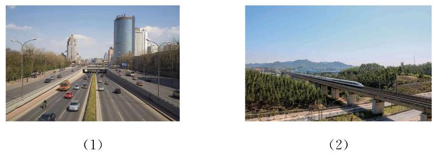
图 10-2-6
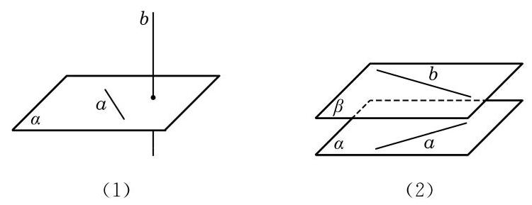
图 10-2-7
像上述这种不在同一个平面上, 既不相交也不平行的两条直线是空间中特有的一种两直线位置关系. 相应地，我们给出下面的定义.
这里, “不同在任何一个平面上的两条直线”是指不存在一个平面, 使得这两条直线都在这个平面上. 例如, 观察图 10-2-8 中长方体 的棱所在的直线,可以发现,直线 与 虽然不在这个长方体的同一个表面上,但是可以找到一个平面 (即平面 ),使得它们都在这个平面上,所以 与 不是异面直线. 但直线 与 则不是这种情况. 假设存在一个平面 同时包含直线 与 ,那么不共线的三点 就在这个平面上,从而由公理 2 可知,平面 就应是长方体的下底面 ,从而直线 就应在长方体的下底面上,但这是不可能的,所以这样的平面 是不存在的. 也就是说,直线 与 是异面直线.
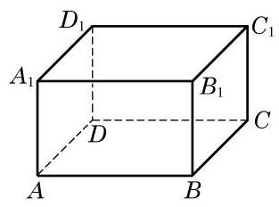
图 10-2-8
这样, 空间的两条直线就有三种不同的位置关系, 可以用下表来分类:
| 位置关系 | 是否共面 | 是否有公共点 |
| 相交 | 是 | 是 |
| 平行 | 是 | 否 |
| 异面 | 否 | 否 |
画两条异面直线时, 通常需要用一个或两个平面来衬托, 如图 10-2-9 所示.
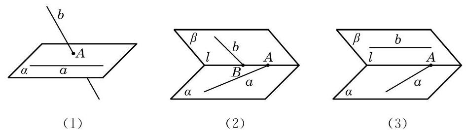
图 10-2-9
为了判断两条直线是否为异面直线，由定义，就要判断两条直线是否“不同在任何一个平面上”，这显然不太方便，一般只能用反证法来进行论证. 为了便于判断两条直线是否异面，我们给出下面的定理.
异面直线判定定理 过平面外一点与平面上一点的直线, 和此平面上不经过该点的任何一条直线都是异面直线.
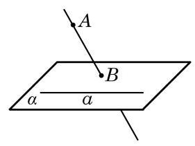
图 10-2-10
已知: 如图 10-2-10,直线 在平面 上,点 不在平面 上,直线 与平面 交于点 ,点 在平面 上但不在直线 上.
求证: 直线 和 是异面直线.
证明 假设存在一个平面 ,使得直线 与 均在平面 上,那么平面 一定经过点 和直线 . 因为 ,由公理 2 推论 1,经过点 与直线 只能有一个平面,它就是 ,从而平面 与 是同一个平面. 这样,点 就应在平面 上,与假设 矛盾. 所以,直线 和 必为异面直线.
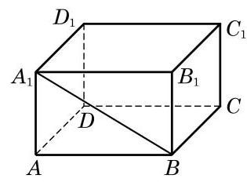
图 10-2-11
例题 3
例 3 如图 10-2-11,在长方体 中, 哪些棱所在的直线与直线 是异面直线?
答案与解析收起 / 展开
解 长方体共有 12 条棱. 过顶点 和 的棱各有 3 条,这 6 条棱所在的直线都与直线 相交,必定与其共面.
对于棱 ,它落在平面 上,而 是过此平面上点 及此平面外点 的直线,由上述定理知,棱 所在的直线与直线 是异面直线. 同理,棱 及 所在的直线均分别与直线 是异面直线.
例题 4
例 4 给定不共面的 4 点，作过其中 3 个点的平面，所有 4 个这样的平面围成的几何体称为四面体 (图 10-2-12). 预先给定的 4 个点称为四面体的顶点, 2 个顶点的连线称为四面体的棱, 3 个顶点所确定的三角形称为四面体的面. 求证: 四面体中任何一对不共顶点的棱所在的直线一定是异面直线.
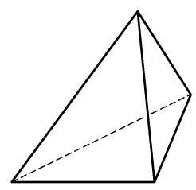
图 10-2-12
答案与解析收起 / 展开
证明 一条棱上有 2 个顶点, 两条不共顶点的棱上一共有 4 个不同的顶点, 也就是说, 两条不共顶点的棱上有全部预先给定的 4 个点了. 如果这两条棱共面, 那么 4 个顶点也共面, 这与已知的 4 点不共面条件矛盾. 由此可见, 任何一对不共顶点的棱所在的直线一定是异面直线.
本例可以运用异面直线判定定理证明吗?
练习 10.2(2)
练习10.2(2) · 1
答案与解析收起 / 展开
练习10.2(2) · 2
- 如果一条直线和两条异面直线中的一条平行, 那么它和另一条直线的位置关系是___.
答案与解析收起 / 展开
练习10.2(2) · 3
- 下页左图是一个正方体的平面展开图, 请在下页右图的正方体中画出对应的线段， 并指出正方体中的线段 中，哪些线段所在的直线与 所在的直线是异面直线.
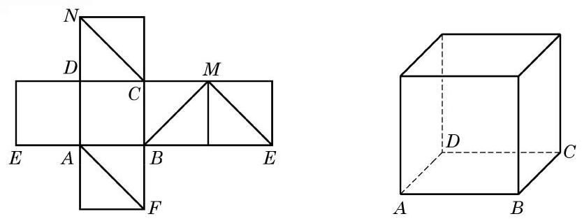
(第 3 题)
答案与解析收起 / 展开
3 两条异面直线所成的角
几何学除了要讨论几何图形之间的相互位置关系, 还要更精确地以定量的方法判断图形的位置与形状. 在平面几何中, 我们已分别通过夹角或距离来确定两条相交或平行的直线之间的相对位置. 空间中的两条相交或平行直线, 本质上可以看成某一平面上的两条相交或平行直线, 也可以用类似方法处理. 那么, 我们该如何确定两条异面直线的相对位置呢?
生活中经常可以看到图 10-2-13(1)所示的道路指示牌. 这些指示牌看上去形成了不同的角度, 指明了不同的方向. 我们把左边的实景图抽象为 10-2-13(2)中的示意图，用 、 等分别表示道路指示牌. 依据异面直线判定定理可知, 它们两两都是异面直线. 现在的问题是: 我们是否可以定义并确定这些异面直线之间的角度呢?
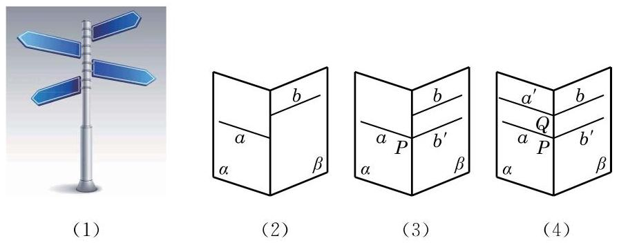
图 10-2-13
一个自然的想法是将两条异面直线转化为相交直线, 然后观察它们所成的角. 例如,在图 10-2-13(3) 中,在平面 内,把直线 平移到直线 上的点 处,记为 . 这样,直线 与 就在点 处相交,它们之间可以用平面几何的方法来度量夹角的大小. 由于这样将直线平移的方法可以有很多, 需要考虑的是: 这样通过平移所形成的角的大小是唯一确定的吗? 例如, 在图 10-2-13(4)中，我们也可在平面 内，把直线 平移到直线 上的点 处,同样得到两条相交直线 和 ,它们所成夹角的大小与 所成夹角的大小相等吗? 由等角定理的推论 2 可知,这两组相交直线所成的锐角 (或直角) 的确是相等的. 事实上,我们可以有下面更为一般的结论:
如图 10-2-14,设 是两条异面直线,在空间任取一点 ,过点 分别作 的平行线 ,那么相交直线 所成锐角(或直角)的大小是唯一确定的.
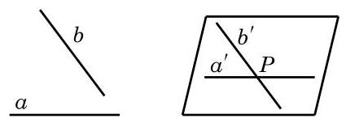
图 10-2-14
这样, 就可以给出下面的定义.
由上述定义知,两条异面直线所成角的范围是 , 在弧度制下是 .
特别地,如果两条异面直线 所成的角是直角,就说这两条异面直线互相垂直,记作 . 由上述定义容易推出: 如果 ,那么 .
例题 5
例 5 如图 10-2-15(1),在正方体 中,
(1)求异面直线 与 所成的角的大小；
(2)求异面直线 与 所成的角的大小；
(3)求证: .
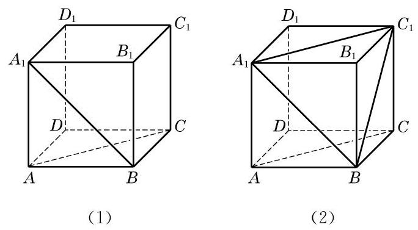
图 10-2-15
答案与解析收起 / 展开
解(1)因为 ，所以 就是异面直线 与 所成的角或其补角. 因为正方形 中, ,所以异面直线 与 所成的角为 .
过空间一点, 可以作几条直线与已知直线平行? 垂直呢?
求两条异面直线所成角时, 一般通过平移将所求角置于某个三角形中, 利用三角形的边角关系来求出这个角的大小.
(2)如图10-2-15(2)，连接 . 由 是平行四边形,知 . 连接 . 在 中,因为 ,所以 是一个等边三角形,从而 . 因为 ,所以 就是异面直线 与 所成的角. 所以,异面直线 与 所成的角为 .
(3)证明:因为 ，且 ，所以 .
练习 10.2(3)
练习10.2(3) · 1
- 在长方体 中,与棱 所在直线异面且垂直的棱有几条?
答案与解析收起 / 展开
练习10.2(3) · 2
- 在如图所示的正方体 中,设 分别是棱 的中点. 请画出异面直线 与 所成的角.
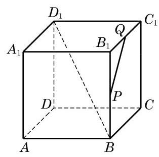
(第 2 题)
答案与解析收起 / 展开
习题 10.2
A 组
习题10.2A · 1
答案与解析收起 / 展开
- 已知: 是两条直线,且 . 求证: 确定一个平面.
证明: 存在性. 在直线 上取一点 ,因为 ,所以 ,由公理 2 的推论 1 知,经过直线 和 外的一点 存在一个平面 . 在平面 内过点 作直线 ,由公理 4 知, 和 只能重合,即 且 . 唯一性. 假设存在另一个不同于 的平面 ,使得 且 . 在直线 上取一点 ,因为 ,所以 ,此时经过直线 和 外的一点 有两个不同的平面 和 ,与公理 2 的推论 1 相矛盾. 唯一性得证. 所以 确定一个平面.
习题10.2A · 2
- 空间两条互相平行的直线指的是 ( )
A. 在空间没有公共点的两条直线;
B. 分别在两个平面上的两条直线;
C. 在两个不同的平面上且没有公共点的两条直线;
D. 在同一平面上且没有公共点的两条直线.
答案与解析收起 / 展开
习题10.2A · 3
- 如图,在正方体 中, 分别为 的中点. 求证: .
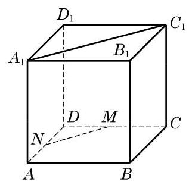
(第 3 题)
答案与解析收起 / 展开
习题10.2A · 4
- 如图是一个正方体的平面展开图, 在这个正方体中, 下列说法中正确的序号是___.
① 直线 与直线 相交;
② 直线 与直线 平行;
③ 直线 与直线 是异面直线；
④ 直线 与直线 成 角.
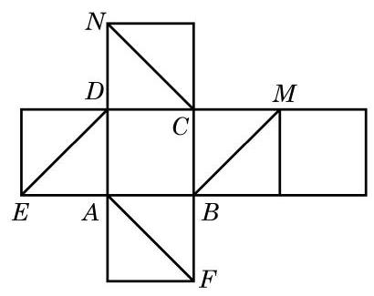
(第 4 题)
答案与解析收起 / 展开
习题10.2A · 5
- 如图,在正方体 中, 分别是棱 的中点. 判断下列结论是否成立, 并说明理由:
(1)直线 与 是相交直线;
(2)直线 与 是平行直线；
(3)直线 与 是异面直线.
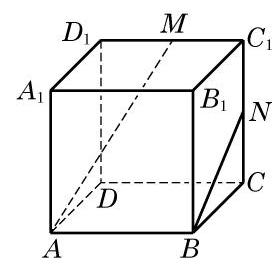
(第 5 题)
答案与解析收起 / 展开
- (1)不成立. 直线 平面 平面 平面 ,由异面直线判定定理知,直线 与直线 是异面直线,故直线 与直线 不相交.
(2)不成立. 取 中点 ,连接 、 . 由 , 知 ,所以 四点共面. 因为 平面 平面 , 平面 ,由异面直线判定定理知,直线 与直线 是异面直线,故直线 与直线 不平行.
(3)成立. 直线 平面 平面 平面 ,由异面直线判定定理知,直线 与直线 是异面直线.
习题10.2A · 6
- 已知 是空间四个点,且直线 与 是两条异面直线. 求证: 直线 与 也是异面直线.
答案与解析收起 / 展开
- 假设直线 与 不是异面直线,则直线 与 共面,所以直线 与 共面,与直线 成异面直线矛盾,所以假设不成立.
习题10.2A · 7
- 如图,在四面体 中, 分别为 的中点. 求直线 和 所成角的大小.
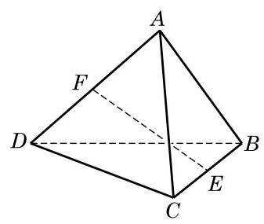
(第 7 题)
答案与解析收起 / 展开
- 如图 10-R5,取 的中点 ,连接 . 因为 是 的中点,所以 ,所以 或其补角就是异面直线 与 所成的角,且 . 又因为 是 的中点,所以 且 . 因为 ,所以 . 因为 ,所以 ,所以 是等腰直角三角形,因此异面直线 与 所成角的大小为 .
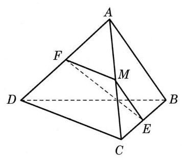
图
B 组
习题10.2B · 1
- 如果两个三角形不在同一平面上，它们的边两两对应平行，那么这两个三角形( )
A. 全等; B. 相似;
C. 相似但不全等; D. 不相似.
答案与解析收起 / 展开
习题10.2B · 2
- 如图,在正方体 中, 分别是 的中点. 求证: .
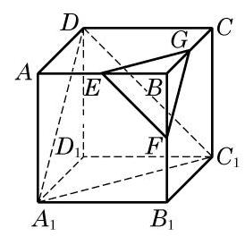
(第 2 题)
答案与解析收起 / 展开
- 提示: 两个都是等边三角形, 也可用等角定理证明.
习题10.2B · 3
- 如图，在长方体 中，判断下列直线的位置关系:
(1)直线 与直线 的位置关系是___；
(2)直线 与直线 的位置关系是___；
(3)直线 与直线 的位置关系是___.
(4)直线 与直线 的位置关系是___.
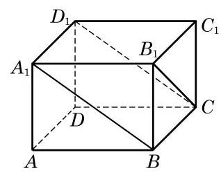
(第 3 题)
答案与解析收起 / 展开
- (1)平行.
(2)异面.
(3)相交.
(4)异面.
习题10.2B · 4
- 如图,已知不在同一平面上的三条直线 相交于点 是直线 上的两点, 分别是直线 上与点 不重合的点. 求证: 和 是异面直线.
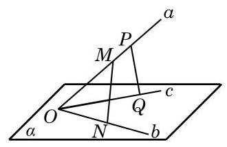
(第 4 题)
答案与解析收起 / 展开
- 假设 和 不是异面直线,则它们共面,不妨记为 ,则 ,所以 . 由公理 1,可知 ,即 ,又 ,所以 . 由公理 1,可知 ,即 ; 同理 . 这与 不在一个平面上矛盾,假设不成立,所以 和 是异面直线.
习题10.2B · 5
- 如图,在四面体 中, 分别为 的中点,并且异面直线 与 所成的角为 . 求 的长.
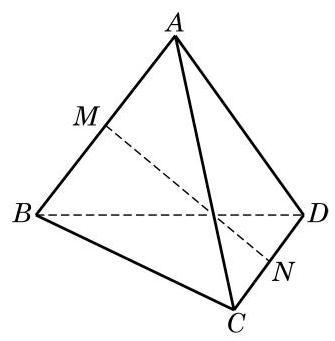
(第 5 题)
答案与解析收起 / 展开
- 如图 10-R6,取 的中点 ,连接 . 因为 是 的中点,所以 ,所以 或其补角就是异面直线 与 所成的角,所以 . 又因为 , 所以 .
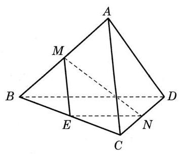
图
习题10.2B · 6
- 如图,在空间四边形 中, 分别是边 的中点. 当对角线 和 满足什么条件时, 分别是矩形、菱形、正方形?
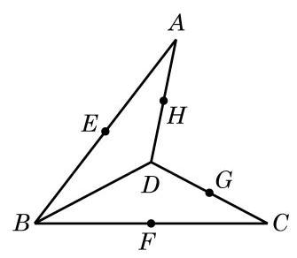
(第 6 题)
答案与解析收起 / 展开
- 当 与 垂直时, 是矩形; 当 与 相等时, 是菱形; 当 与 既垂直又相等时, 是正方形.